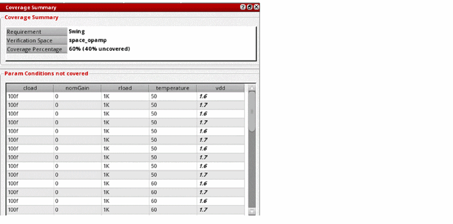
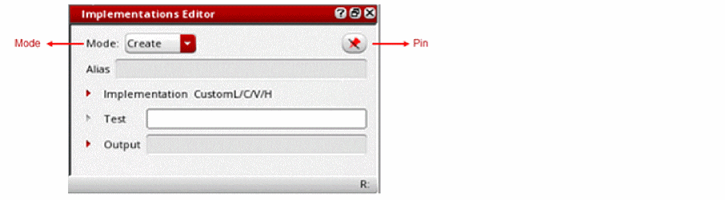
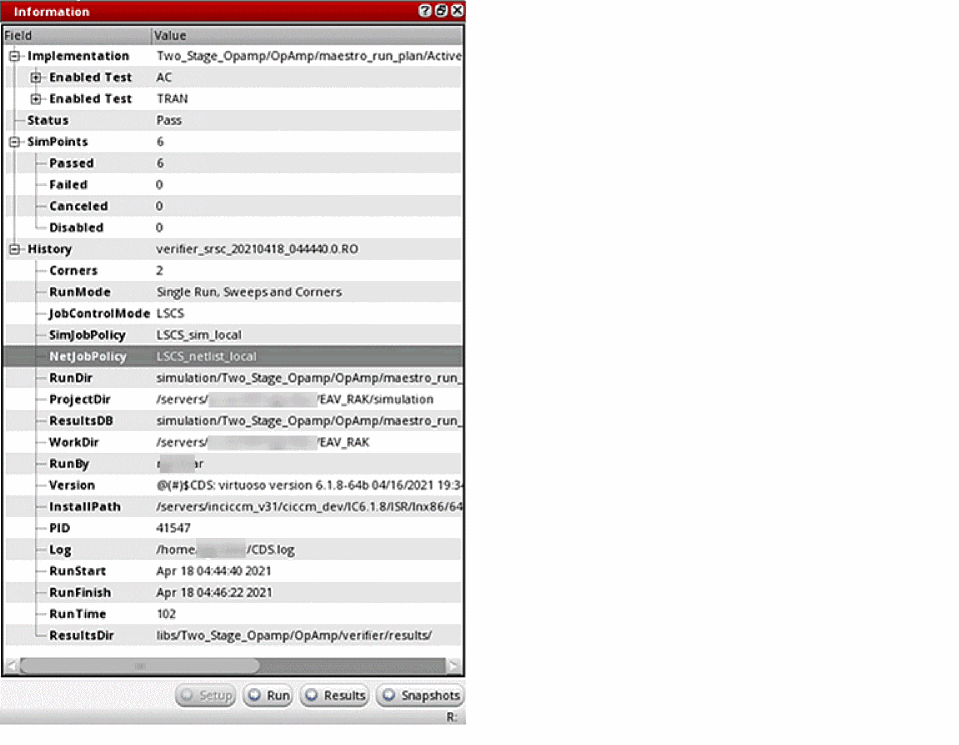
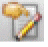
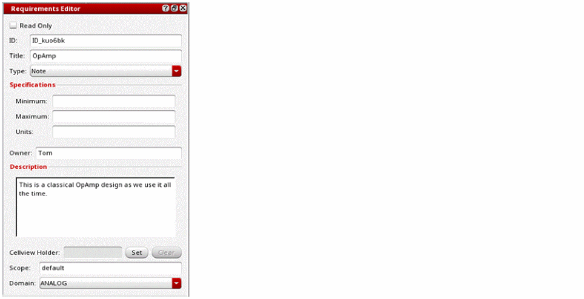
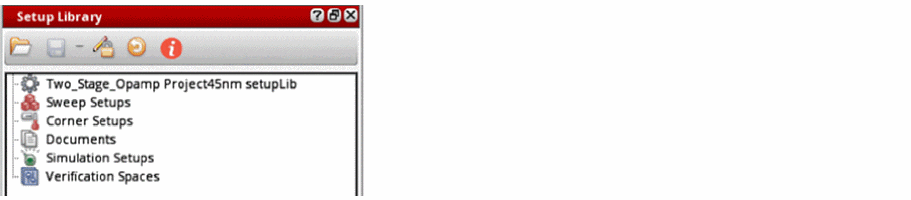
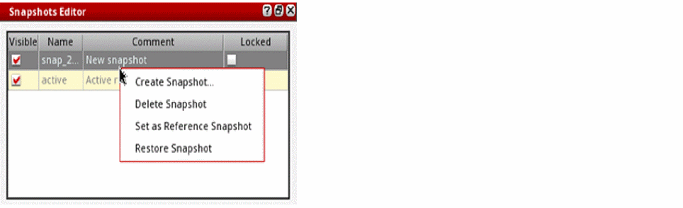

1
Introduction to Virtuoso ADE Verifier
With advanced nodes, and a multitude of performance and reliability requirements, analog designs and their verification flows are becoming more complex. The analog components mostly work together with highly complex digital components, creating a mixed-signal system-on-a-chip. As a result, the quality requirements of verification flows are escalating. For example, international standards mandate that companies record all the verification steps for automotive electronic and electrical safety-related systems. Other industry segments have similar standards and requirements. Therefore, managing a design verification project can be challenging, especially when multiple designers are involved in the project containing many design blocks.
With increasing verification requirements, project managers, verification leaders, and designers need a comprehensive and scalable verification solution for their analog-centric IPs. Such solutions are also essential for business success as re-spins are no longer acceptable for designs, such as the design of a mixed-signal system-on-a-chip.
To augment Virtuoso with features that offer a complete analog design verification solution, Cadence provides Virtuoso ADE Verifier (Verifier). Verifier is a comprehensive application to conduct and monitor requirements-driven verification flows for analog designs that can be used in a top-down, bottom-up, or mixed verification flow for your analog and mixed-signal designs. Verifier lets you set up a verification project with many blocks having multiple verification requirements owned by multiple team members. You can map these requirements to their corresponding simulation setups, which are referred to as implementations. You can simulate the implementations to gather the results. Then, you can review the overall verification status of the entire project, and drill down to the detailed status of each verification requirement in the requirements hierarchy. You can customize Verifier to suit your project. It is possible to reuse your verification setup for other projects to improve the verification quality.
You can use Verifier to meet the following objectives for your design verification flows:
- Define the verification requirements for a design project.
-
Map the verification requirements with their implementations, which can be ADE Assembler and ADE Explorer cellviews of the type
maestro, their tests, and outputs. - Specify references of requirements when multiple designers are involved in the project.
- Simulate multiple implementation cellviews individually, serially, or in parallel.
- Perform and monitor large, batch-based verification regression runs.
- Review the overall verification status of the entire project, and drill down to the detailed status of each verification requirement through various reports.
Verifier maintains verification data in cellviews of the type verifier that contain:
- The verification requirement plan, structured as a hierarchy of requirements
- Implementation links and the mapping between the requirements and their corresponding implementations
- Verifier settings, such as the default job policy to use, the source for verification specifications that Verifier uses to determine verification results, among other details
You can use the advanced features of Verifier to accommodate the unique needs of your verification project. For example, you can add custom fields that are specific to your project and manually sign off requirements. Verifier also lets you create owner cellviews of the type verifier based on the owners of the requirements. This feature helps project managers assign owners to design verification requirements and monitor the verification status of the owned requirements. Requirement owners can create implementations and map them to their requirements.
In addition to the graphical user interface, Verifier offers a configurable environment and full data access through an extensive set of SKILL functions. For details on these functions with examples, see Virtuoso ADE Verifier SKILL Reference.
Related Topics
Key Elements of Virtuoso ADE Verifier
ADE Verifier in Design Verification Flows
Key Elements of Virtuoso ADE Verifier
Key Elements of Virtuoso ADE Verifier
This topic provides the information you need to start and set Virtuoso ADE Verifier (Verifier). You can launch a Verifier session from the Virtuoso environment. Verifier has an intuitive graphical user interface, where the verification content is categorized into these tabs:
- Setup – For defining and mapping requirements and implementations.
- Run – For managing and reviewing simulations of the implementations.
- Results – For reviewing the overall and detailed verification results.
- Snapshots – For comparing the detailed project status based on property values at different verification stages.
You can customize the behavior of Verifier to meet the unique objectives of your verification project. For example, you can add custom fields for storing additional information specific to your verification project. Verifier logs useful information, which you can access for obtaining additional details.
Verifier uses the following key elements to provide the design verification infrastructure.
Requirements
A design verification plan includes a set of verification requirements structured in a hierarchical tree. The terms verification plan and requirements hierarchy are interchangeable. A verification requirement is an abstract description of an aspect of a design that needs to be verified, along with its details. It includes details like the title, description, and verification type with the applicable range of acceptable output values. In a multi-user design environment, requirements can be referenced. You can also specify custom fields to include additional information.
Verifier lets you capture the verification requirements of a design in a hierarchy and provides the mechanism to use them as the base to analyze the verification results. This approach helps implement a requirements-driven verification flow.
Example: Consider that one of the first verification requirements of a design is to check the analog parametric AC behavior of a block. Under this, you can check the AC gain, DC gain, and bandwidth.
Implementations
A verification implementation represents the simulation setup, testbench, and the measured output of a requirement. Implementation data is stored in cellviews of the type maestro.
You map requirements to the corresponding implementations. To determine if a design verification requirement has been verified or has failed verification, you run the simulation tests associated with the mapped implementations. Verifier compares the outputs of these tests with the specification values set in the related implementations or requirement and determines the verification results.
Verifier also supports the checks and asserts defined in cellviews as implementations.
Example: Consider that the test output of the maestro cellview of the block that captures the DC gain you want to verify is as follows:
opamp090/full_diff_opamp_AC/maestro/Active.opamp090:full_diff_opamp_AC:1.DCGain
You can map this implementation of the output to the requirement ID1.1.2 for DC gain verification.
Also, the output result must meet a specification to pass verification. You can set this specification in the requirement or the implementation. Consider that the specification is that the result should be more than 25 units (>25).
Verification Status and Reports
Verifier presents the overall requirements-based design verification status and detailed verification results in HTML format. It also displays simulation details of implementations.
Example: Once you run the implementation cellview, you can check if the DC gain requirement that you set failed or passed. The following figure represents how you can review the status of the DC gain requirement directly from Verifier. You can also access details from the other reports that Verifier provides.
Related Topics
Introduction to Virtuoso ADE Verifier
ADE Verifier in Design Verification Flows
ADE Verifier in Design Verification Flows
You can customize the use of Verifier according to your design verification needs. For example, you can use Verifier in a top-down flow where you define requirements before you add their implementations, which are stored in cellviews of the type maestro. Alternatively, you can use Verifier in a bottom-up flow where you add implementations before you start developing the verification plan in the form of requirements hierarchy. You can also use Verifier in a meet-in-the-middle flow that has a mix of the top-down and bottom-up elements.
The top-down flow is recommended when you want to reuse a verification plan in different projects. Use the bottom-up flow if the design project is in progress and implementations already exist.
When you launch a new Verifier setup, Verifier initially prompts you to open an existing Verifier cellview. If you specify a cellview name that is not available in the selected library, Verifier prompts you to include implementations for a bottom-up flow, include requirements for a top-down flow, or start Verifier without any data.
ADE Verifier in a Top-Down Verification Flow
The following flowchart illustrates how you can use Verifier in a generic top-down verification flow.
Verifier in a generic top-down verification flow includes the following stages:
- Defining design verification requirements.
-
Adding implementations, in the form of
maestrocellviews, and their tests and outputs; then map them with the corresponding requirements. - Initiating the simulation of implementation cellviews from Verifier, monitor status, and review results. You can also start the simulation from another application, including ADE Assembler and ADE Explorer, and load results into Verifier.
- Monitoring the design verification status using reports. Based on predefined criteria set in the requirements and implementations, Verifier analyzes the simulation results and presents the design verification status.
ADE Verifier in a Bottom-Up Verification Flow
The following flowchart illustrates how you can use Verifier in a generic bottom-up verification flow.
Verifier in a generic bottom-up verification flow includes the following stages:
-
Adding implementations to Verifier, which can be cellviews of the type
maestro, their testbenches, and measured outputs. -
Creating requirements corresponding to the implementations.
Verifier lets you create requirements using the data stored in implementations. These requirements are also mapped to their corresponding implementations. -
Initiating the simulation of implementation cellviews from Verifier, monitor the status, and review results. You can also start the simulation from other applications, ADE Assembler and ADE Explorer, and load results into Verifier.
You can specify the project requirements and map them to their implementations at any time in the flow, even after simulating the implementations. Verifier presents requirements-based verification results. Therefore, you must map the requirements with their implementations to obtain the verification details. - Monitoring the design verification status using reports. Based on predefined criteria set in the requirements and implementations, Verifier analyzes the simulation results and presents the design verification status.
Related Topics
Introduction to Virtuoso ADE Verifier
Key Elements of Virtuoso ADE Verifier
Prerequisites to Using ADE Verifier
To use Verifier, ensure that you have the correct Virtuoso version and license.
Verifier is available with the license 95270 (Virtuoso_ADE_Verifier) in the IC6.1.7 and higher releases.
Appropriate licenses are required to simulate implementations from Verifier. These include the licenses for Virtuoso ADE Assembler and the appropriate simulator licenses for simulating designs and using the appropriate simulation environment.
A single license is checked out for ADE Verifier, even if you run more than a single session or an external run on the same host. To know the correct number of licenses checked out, validate the number of checked out licenses directly on the server.
To have ADE Verifier return its license to the license pool after a specified duration, you can add the TIMEOUT option to the license options file. The license is reclaimed when the product has been idle for sometime using this option.
By default, the value of TIMEOUT is infinity, that is, Verifier releases the license only when a session is closed.
Once the license is released to the pool during an inactive session, Verifier tries to regain the license when the session becomes active again. However, if it is unsuccessful in regaining the license, close the current session, and restart the tool. For details, refer to
With the TIMEOUT option, you can specify how long a license can be inactive before being available for another user. For example, if you want ADE Verifier to time out in two hours of inactivity, add the following command in the options file:
TIMEOUT Virtuoso_ADE_Verifier 7200
Related Topics
Key Elements of Virtuoso ADE Verifier
ADE Verifier in Design Verification Flows
Launching Verifier
You can launch Verifier in multiple ways from Virtuoso for different purposes.
| Location | Process to Launch Verifier |
|---|---|
|
Launch Verifier without any cellview information, which you can add and save later |
|
If you specify a new cellview name, Verifier displays
After setting up your verification project, save your verifier cellview by clicking Save on the toolbar. When you save your Verifier setup for the first time or choose to save the opened verifier cellview as another cellview, the Save As form appears to let you specify the library, cell, and view name.
Related Topics
Prerequisites to Using ADE Verifier
Verifier Cellviews and Sessions
Verifier Cellviews and Sessions
The Choose Verifier Cellview form is displayed when Verifier is launched by choosing Tools – ADE Verifier from Virtuoso CIW.
You can open only one cellview in a Verifier session running in a Virtuoso session. It is possible to open multiple Verifier sessions in a Virtuoso session. You can use the Verifier SKILL functions to manage Verifier sessions. For details and examples, see Virtuoso ADE Verifier SKILL Reference.
If you are using a design management environment with Virtuoso, you must check out the Verifier cellview that you want to edit. To commit your changes, check in the cellview. When you choose to open a Verifier cellview that is not checked out, the environment prompts you to check it out. If you do not do so, the cellview opens in read-only mode. For details on the design management environment, see
Related Topics
Graphical User Interface of ADE Verifier
The main interface of Verifier opens after you specify settings in the Choose Verifier Cellview Form form by selecting Tools – ADE Verifier from Virtuoso CIW.
The graphical interface includes the following main components.
- Tabs in ADE Verifier
- Main Toolbar in ADE Verifier
- Assistants in ADE Verifier
- Menu Bar in ADE Verifier
To know more about copying and pasting text or fields, see Copying Requirements in the Hierarchy.
Tabs in ADE Verifier
The following table describes the various tabs available in ADE Verifier.
| Tab | Description |
|---|---|
See Requirements in Virtuoso ADE Verifier and Implementations and Mappings in Virtuoso ADE Verifier. |
|
|
Starts and stops the simulation of implementation cellviews. You can set the run options in the Preferences form to simulate multiple cellviews simultaneously. You can also specify the settings for Run Mode on the Verifier toolbar. See Implementation Runs in ADE Verifier. |
|
|
Lets you review the detailed verification status of the complete design verification project and sign off the failures. You can generate reports in HTML format. See Managing Verification Results. |
|
|
Lets you compare the property values of requirements at different stages in the verification cycle. See Snapshots in Virtuoso ADE Verifier. |
To know about creating custom shortcut menus in the above tabs, see
Related Topics
Graphical User Interface of ADE Verifier
Main Toolbar in ADE Verifier
The main toolbar in Verifier consists of the following sub-toolbars:
- File
- Simulation
- Edit
- Move
- Filter
- Bookmarks *
- Go *
- Workspaces
- Progress Bar
File
Simulation
| Command | Tooltip | Description |
|---|---|---|
|
Runs the simulation locally, in batch mode, locally with SPACE, or in batch mode with SPACE.
When you save the cellview, the run mode is saved to the |
||
|
Starts all or selected simulation runs associated with implementations. |
||
|
Stops all or selected simulation runs associated with implementations. |
||
|
Check for Changes in All / Selected Implementations and Simulation Results |
Checks if all or the selected implementation cellviews and their simulation results have changed since the last run. |
|
|
Calculates the coverage percentage for the selected implementation and also check which project-specific setup values are not run for the selected design block. |
||
|
Reloads the latest simulation results for all implementations in the current setup. |
||
|
Creates a script to use with Virtuoso for running simulations and loading simulation results. This script can also be used to only load the results. |
Edit
Move
Filter
| Command | Tooltip | Description |
|---|---|---|
|
Shows or hides the filter row in the requirement and the implementation panes. |
||
|
Clears all the filter criteria specified in the filter rows. |
||
Workspaces
| Command | Tooltip | Description |
|---|---|---|
|
Selects a workspace with the default or custom configuration. The available values are Basic, Snapshots and vManager. |
||
Progress Bar
Related Topics
Graphical User Interface of ADE Verifier
Assistants in ADE Verifier
The following assistant panes are available in Verifier:
- Coverage Summary Assistant
- Information Assistant
- Requirements Editor Assistant
- Setup Library Assistant
- Snapshots Editor Assistant
Coverage Summary Assistant
The Coverage Summary assistant allows you to view the coverage summary and parameter conditions that are not covered for the requirement.
To view the Coverage Summary Assistant, do one of the following:
- Click the icon on the toolbar.
- Choose Window – Assistants – Coverage Summary.
-
Right-click on the toolbar or the menu area, and choose Assistants – Coverage Summary.
For information about using the Coverage Summary assistant pane, see Viewing the Coverage Summary.
Implementations Editor Assistant
The Implementations Editor assistant allows you to view the currently selected implementation and view or modify a custom implementation. This assistant is helpful in the Setup tab.
To view the Implementations Editor, do one of the following:
- Right-click the toolbar or the menu area, and choose Assistants – Implementations Editor.
-
Choose Window – Assistants – Implementations Editor. 
The Implementations Editor assistant follows the current selection in the Implementations pane. To pin the editor on an implementation, select the implementation and click the Pin button on the top right corner of the assistant pane. This is especially useful during drag-and-drop operations.
Depending on the current selection in the Implementations pane, one or more of the following modes might be available in the Implementations Editor:
- Create: This mode is activated when you choose Create Custom Implementations from the shortcut menu in the Implementations pane. New custom implementations are created based on the specified values.
- Modify: This mode is activated when you choose Modify in the Mode list or when you choose Modify Custom Implementations from the shortcut menu in the Implementations pane. When this mode is selected, the Implementations Editor lets you make changes to the values or names assigned to tests, outputs, aliases, or specifications.
- View: This mode is activated when you choose View in the Mode list or when you select a maestro implementation. In this mode, the Implementations Editor performs as a viewer of information, and disables any changes in the implementation details.
For information about using the Implementations Editor assistant, see Edit Custom Implementations.
Information Assistant
The Information assistant allows you to view the information associated with the current selection in a hierarchically organized format. These selections can be a requirement, an implementation, a simulation run, or the results of an implementation run.
To display the Information assistant, do one of the following:
- Click the button on the toolbar.
- Right-click the toolbar or the menu area, and choose Assistants – Information.
-
Choose Window – Assistants – Information.

When you select a requirement, the Information assistant shows the following sections of information:
- Requirement (properties)
- OverallStatus (numbers and result data age)
- Signoff (signoff data)
- Mappings (mapped implementation cellview, run, reliability, test, or output)
When you select an implementation cellview, run, reliability, test or output, the Information assistant shows the following sections of information:
- <Type> (setup or properties)
- Status
- SimPoints
- History (the run mode, job control mode, simulation job policy, net job policy, simulation information for implementation or run, design cellview and simulator used for the test, specs, unit, min/typical/max values, parameters and failures for output)
Clicking the Setup, Run, Results, and Snapshots buttons on the assistant pane allow you to navigate to the corresponding page to view the related information and select the item that was shown in the assistant, if it exists on that page.
For example, when you click an implementation in the Setup page and open the Information assistant, the assistant displays the details of the implementation, the simulation points, and the history. Now, when you click the Results button in the assistant pane, the Results page is displayed and the requirement that is mapped to the implementation is selected. The assistant now displays the details related to the requirement, overall status, and mappings.
In contrast, when you manually select the Setup, Run, Results, and Snapshots tabs to open their corresponding pages, the information displayed in the assistant changes depending on the last selection on that page. For example, you select a requirement with ID 1.1 on the Setup page and the Information assistant shows its corresponding details. Now, if you switch to the Results page, the assistant might show the details of a different requirement that was selected the last time you worked on the Results page. If you switch to the Setup page, the Information assistant now displays the details of requirement 1.1 again.
For information about using the Information assistant pane, see Viewing Run Results Using the Information Assistant and Bindkeys for View Navigation and Interaction with Item Contents.
Requirements Editor Assistant
The
To view the Requirements Editor, do one of the following:
- Click the  icon on the toolbar.
- Right-click the toolbar or the menu area, and choose Assistants – Requirements Editor.
- Choose Edit – Open Requirements Editor.
-
Choose Window – Assistants – Requirements Editor.
For information about using the Requirements Editor assistant, see Editing Requirements Using the Requirements Editor Assistant.

Setup Library Assistant
The Setup Library assistant helps you view the information associated with the current simulation run and the implementation run results.
To view the Setup Library assistant, do one of the following:
- Choose Window – Assistants – Setup Library.
-
Right-click on the toolbar or the menu area, and choose Assistants – Setup Library.
For information about using the Setup Library assistant, see Verifying the Design Against the Specified Setup.
Snapshots Editor Assistant
The Snapshots Editor assistant allows you to view the information associated with the current verification setup and compare it with previous setups, that are captured as snapshots.
To view the Snapshots Editor assistant, do one of the following:
- Choose Window – Assistants – Snapshots Editor.
- Right-click on the toolbar or the menu area, and choose Assistants – Snapshots Editor.
- Choose Window – Workspace – Snapshots.
-
Choose Snapshots in the workspace list on the Verifier toolbar.

For information about using the Snapshots Editor assistant pane, see Snapshots Editor.
For more information about the various assistants in Virtuoso, see
Related Topics
Graphical User Interface of ADE Verifier
Menu Bar in ADE Verifier
The following table describes the various menus available on the menu bar in ADE Verifier.
Related Topics
Graphical User Interface of ADE Verifier
Setting Virtuoso ADE Verifier Preferences
You can configure the general, planning, run, distribution, and report options of Verifier using the Preferences form.
To set your Verifier preferences:
-
Choose Edit – Preferences.
The Preferences Form appears. -
Click the tab that provides the options you want to set.
For example, to specify the number of simulation jobs that can run in parallel, click the Run Options tab. -
Set the required options.
If you have configured Verifier to use custom fields, see Custom Fields to set the project-level custom fields. - Click OK.
The current Verifier session implements your settings. When you save the setup in a cellview, these settings are also saved.
You can also configure Verifier by setting environment variables. For details, see Verifier Environment Variables.
Related Topics
Environment Variables to Set Preferences
Logs and Automatic Backups in Virtuoso ADE Verifier
Verifier logs useful information of the current session. It indicates the reason for the failure of a specification check in the tooltips. All important messages are displayed in the CIW.
Verifier saves the current setup settings in the settings.v3 file. When saving a session, Verifier creates a backup of the settings.v3 file as settings.v3~. When you open a new session, Verifier checks if the current settings.v3 contains any setup information. If the file is empty, Verifier then looks for an existing backup with data, which is the settings.v3~ file, and displays a dialog box to confirm whether you want to restore from the backup found, or continue with a new setup.
Related Topics
Prerequisites to Using ADE Verifier
Global Bindkeys in Virtuoso ADE Verifier
The following table lists the bindkeys applicable in Verifier.
|
Access to mappings in the Requirements and Implementations hierarchy |
|
Related Topics
Bindkeys for View Navigation and Interaction with Item Contents
Bindkeys for View Navigation and Interaction with Item Contents
All hierarchies in a view support a set of key bindings that enable the user to navigate in the view and interact with the contents of the items.
Related Topics
Global Bindkeys in Virtuoso ADE Verifier
Return to top